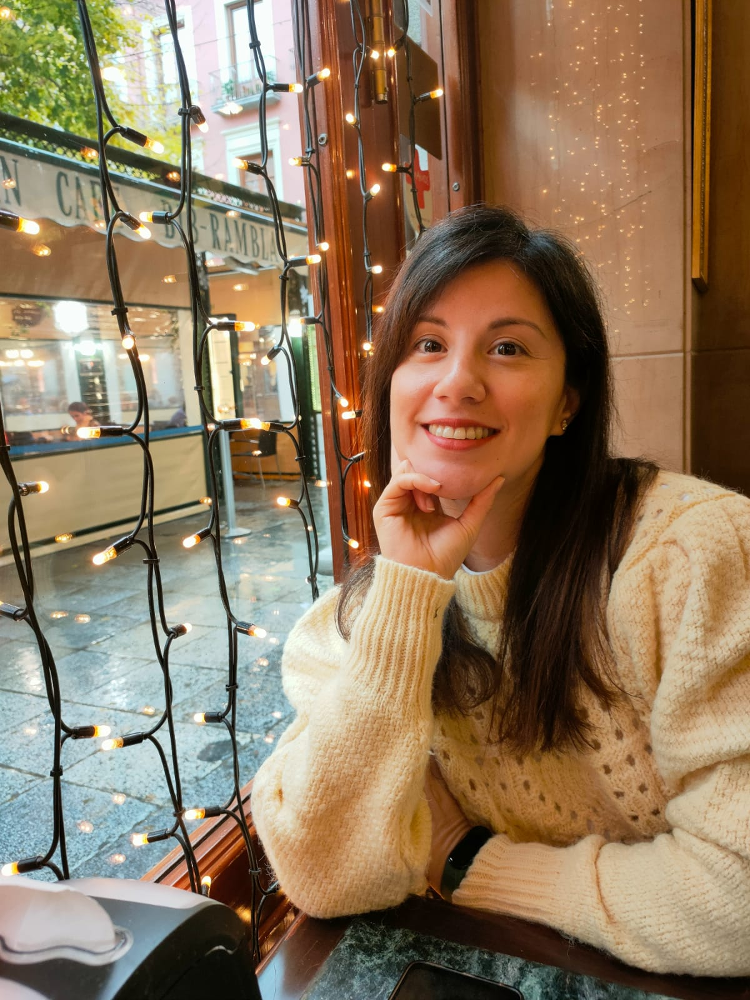
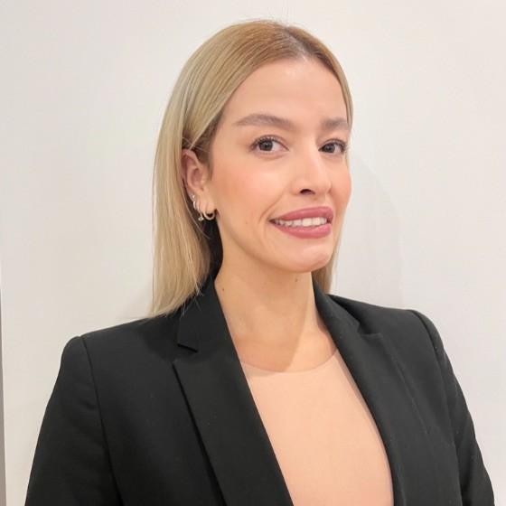
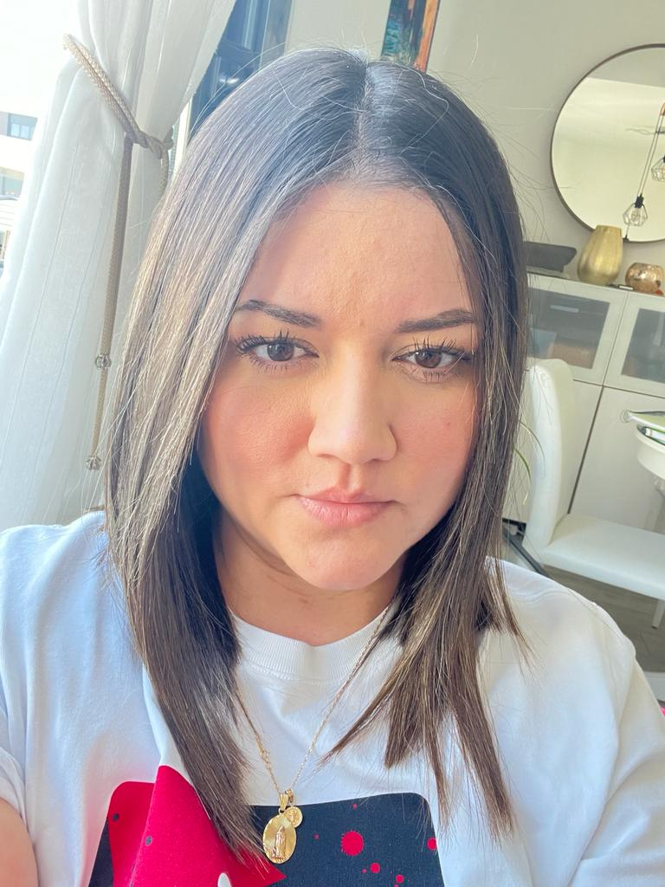

"Andrea, una buscadora incansable de aventuras en la vida y en el mundo digital. En su
viaje de reinvención
profesional hacia el mundo de la tecnología, se sumerge en el desarrollo web y la ciberseguridad con una
pasión contagiosa. Cuando no está inmersa en líneas de código, la encontrarás explorando senderos naturales,
practicando yoga para mantener equilibrio y descubriendo tesoros escondidos en nuevos lugares. Su risa es su
sello distintivo, capaz de iluminar cualquier espacio, pero también lleva consigo la nobleza de lágrimas que
expresan tanto alegría desbordante como profundidad emocional. Para ella, la vida se trata de llenar cada
momento con risas, descubrimientos y emociones genuinas."
"Luis, nuestro apreciado Master TAFMOTU, es un faro de conocimiento en el mar de la
tecnología. Su dominio en
el sector IT es legendario y su sabiduría una brújula para muchos. A pesar de su impresionante pericia, su
personalidad divertida y amigable lo convierte en alguien cercano, sorprendiéndonos siempre con su generosidad
y paciencia inagotable. Su apoyo profesional es como un ancla sólida, brindando estabilidad y guía en
cualquier situación. Luis, un verdadero disfrutón de la vida, encuentra la alegría en cada momento, inspirando
a todos a valorar cada instante y a encontrar placer en el viaje."

"Lea, una persona serena y paciente, está en medio de un emocionante cambio profesional
hacia el mundo del
desarrollo web y la ciberseguridad. Su tranquilidad es como un remanso de paz en cualquier situación.
Apasionada por llevar un estilo de vida saludable, cuida tanto su mente como su cuerpo con esmero,
convirtiendo cada día en una oportunidad para nutrirse. Su amor por viajar y descubrir nuevos horizontes la
lleva a explorar lugares desconocidos, encontrando en cada experiencia una fuente de aprendizaje y
crecimiento. Lea abraza la vida con calma y determinación, encontrando equilibrio en la búsqueda de
conocimiento y en el disfrute de cada aventura que la vida le presenta."
"Mar, cariñosamente apodada 'Maremoto', es un ser único y radiante que se sumerge en
una nueva travesía en el
mundo tecnológico como desarrolladora y guardiana de la ciberseguridad. Su corazón rebosa bondad y su sonrisa
ilumina cualquier espacio. Posee una originalidad que la hace destacar, como si cada línea de código fuera un
lienzo en blanco esperando su toque único. Conocida por su energía avasalladora y su apodo 'Maremoto', reflejo
de su pasión por borrar cositas en el código y renovar el panorama digital. Su amor por la pintura infunde
color y creatividad en su vida, encontrando en cada pincelada una conexión entre la tecnología y el arte. Su
alegría es contagiosa, capaz de convertir los desafíos en oportunidades y de inspirar a otros a seguir sus
pasos hacia la autenticidad y la creatividad sin límites."

"Daniela, conocida cariñosamente como 'Eraser Woman', es un torbellino de generosidad y
amistad que brilla
con fuerza en cada nuevo comienzo. En su camino hacia la reinvención profesional en el mundo del desarrollo
web y la ciberseguridad, su espíritu luchador y su capacidad para volver a empezar la distinguen. Su don
natural para enseñar y su habilidad para cautivar con su oratoria hacen que cada lección sea un viaje
emocionante. Además, su destreza en el diseño se refleja en cada creación culinaria que comparte con sus
amigos, mientras cultiva su amor por las plantas. Daniela abraza la vida con entusiasmo, transformando cada
desafío en una nueva oportunidad para brillar y compartir su pasión por el aprendizaje y la diversión."